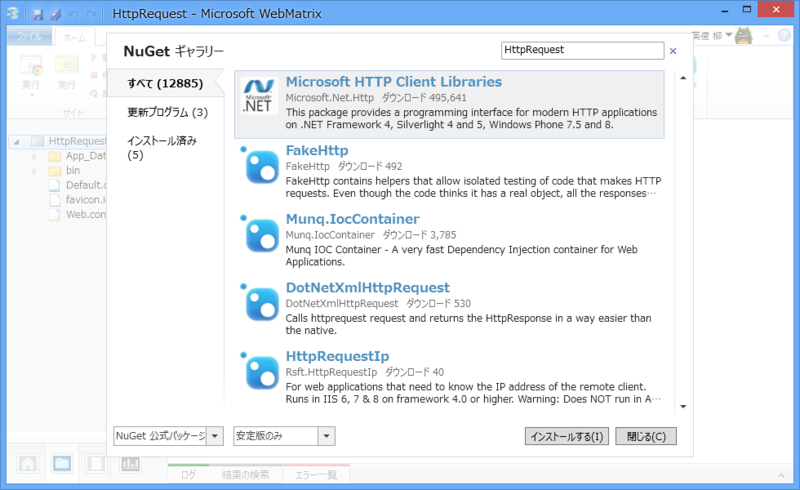
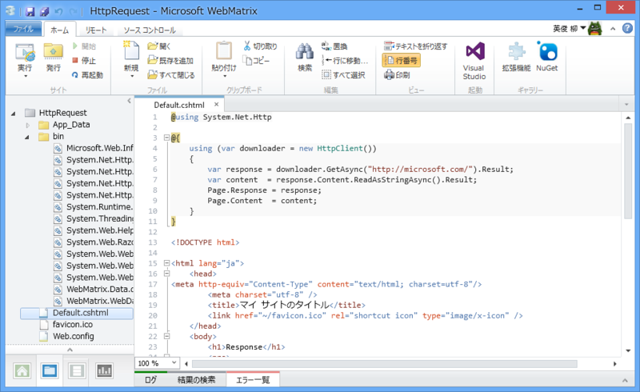
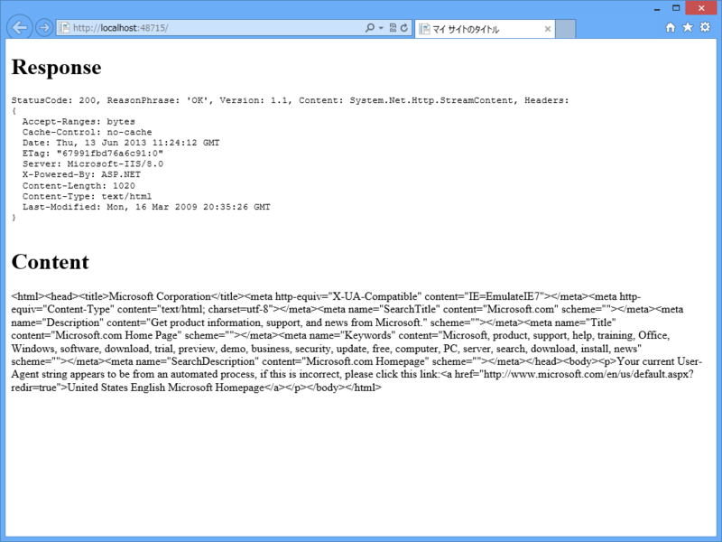
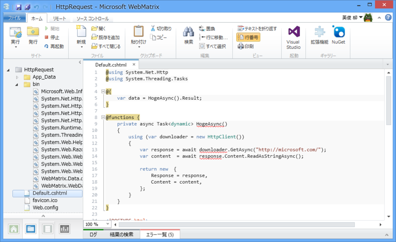

WebMatrix 3: HttpClient を使う
公開日：
As promised in our last blog post we’re releasing Microsoft.Net.Http as a stable NuGet package today. Yep, that’s right: You can finally start using the portable HttpClient 2.1 in production!
Get /httpclient/rtm – 200 OK - .NET Blog - Site Home - MSDN Blogs
Microsoft BCL チームが HttpClient を NuGet で利用できるようにして、すでに2週間が経っていた。汎用性の高いこのネットワーククライアントクラスは .NETer の第二の故郷となり、人々はそれでリクエストを飛ばし、受け取り、そして死んでいった。
――こいつの何が便利なのかは諸兄の解説に譲るとして。
オラはこれを WebMatrix で使ってみるぞ！……正直 WebMatrix で使うべきものなのかはよくわからんが。
NuGet パッケージをインストール
空のサイト（ASP.NET）を作成。

“HttpClient”で検索して NuGet パッケージをインストール。これでした準備を完了。
とりあえず使ってみる

Microsoft のトップページでも Get してみるかの。
@using System.Net.Http@using (var downloader = new HttpClient()) { var response = downloader.GetAsync("http://microsoft.com/").Result; var content = response.Content.ReadAsStringAsync().Result; Page.Response = response; Page.Content = content; }
<!DOCTYPE html>
<html lang="ja"> <head> <meta http-equiv="Content-Type" content="text/html; charset=utf-8"/> <meta charset="utf-8" /> <title>マイ サイトのタイトル</title> <link href="~/favicon.ico" rel="shortcut icon" type="image/x-icon" /> </head> <body> <h1>Response</h1> <pre> @Page.Response </pre>
<h1>Content</h1> @Page.Content </body> </html>

普通に使えた。WebClient のときよりも微妙にコードが長くなった気がするけど気にしない。今回は使えるかやってみるのが目標なので。
ちなみに @{ @using(){…} } の外側のカッコは省略できるけど（今回は省略して書いた）、変数のスコープを間違えやすいのでお勧めしない（今回の場合、var response がビューから呼べるような気がするけど呼べない）。
非同期にしてみる

これだけではあんまり面白くないので、async/await も使ってみるかな。……で、それで気づいたのだけど、WebMatrix のシンタックスハイライタは async/await に対応していない。まぁ、困りはしないが……
@using System.Net.Http @using System.Threading.Tasks@{ var data = HogeAsync().Result; }
@functions { private async Task<dynamic> HogeAsync() { using (var downloader = new HttpClient()) { var response = await downloader.GetAsync("http://microsoft.com/"); var content = await response.Content.ReadAsStringAsync();
return new { Response = response, Content = content, }; } } }
<!DOCTYPE html>
<html lang="ja"> <head> <meta http-equiv="Content-Type" content="text/html; charset=utf-8"/> <meta charset="utf-8" /> <title>マイ サイトのタイトル</title> <link href="~/favicon.ico" rel="shortcut icon" type="image/x-icon" /> </head> <body> <h1>Response</h1> <pre> @data.Response </pre>
<h1>Content</h1> @data.Content </body> </html>
結果は同じ。
まとめ
- 普通に使える
- でも、利点は感じない（ストアアプリなんかだったらバリバリ使うけど）
- シンタックスハイライタが async/await に対応していなかった